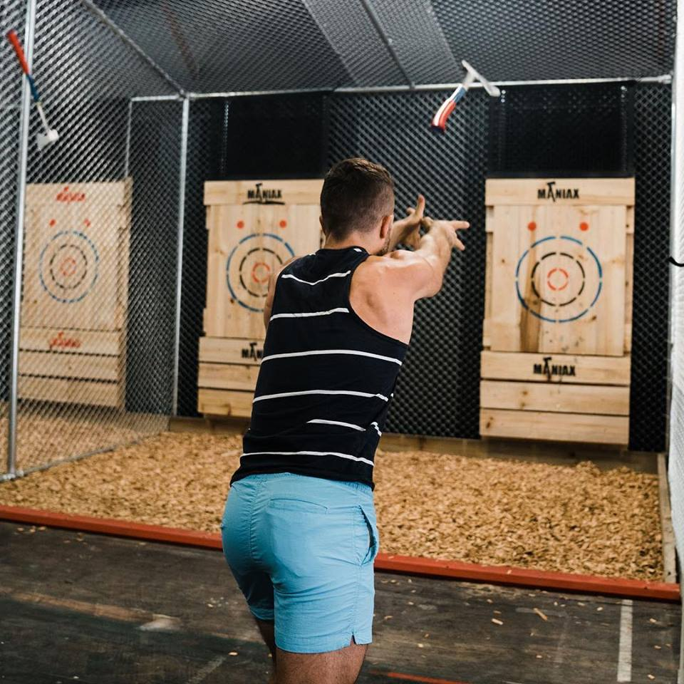
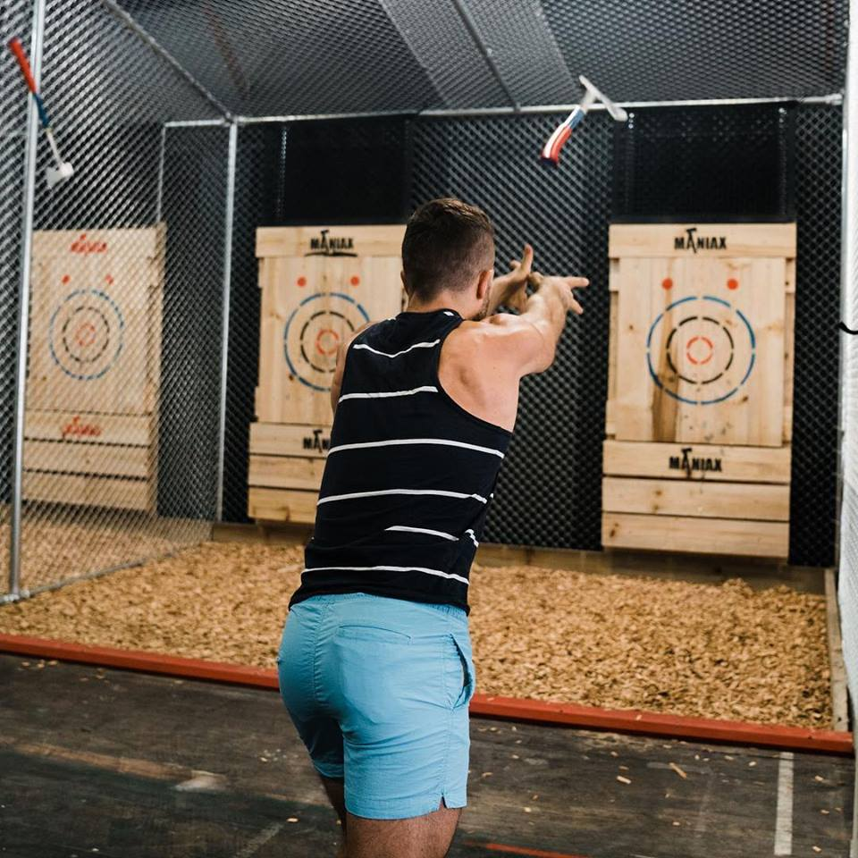

About Us
Lochquarry Outdoor Centre delivers high-quality Outdoor Education courses for schools and groups. Our adventurous outdoor activity programme embraces the rivers, mountains and lakes of Lochquarry. Our experienced instructors focus on the many educational benefits that outdoor learning brings, capitalising on the activities we offer and our comfortable residential setting.
We can't wait to see you.
Why Lochquarry is a unique outdoor activity centre?
All activities are off-site with easy access to mountains and coast. Each activity group is assigned its very own instructor. We offer Outdoor Education courses, true flexibility and can finalise activities and venues daily.
We tailor adventures for each individual, each matched perfectly to the changing weather. Our highly qualified and experienced staff team know Fort William inside and out.
We offer accommodation and catering for groups of 10 to 100 pupils.
Lochquarry Outdoor Centre holds an Adventure Activities License, provider of Mountain Training qualifications and a approved provider for Duke of Edinburgh award.
Our address
- Lochern Road
- Fort William
- PH33 7GR
- Tel : (01475) 229 8311
- email: info@lochquarryoutdoor.com
Opening hours
- Monday - 09:00-19:00
- Tuesday - 09:00-19:00
- Wednesday - 09:00-19:00
- Thursday - 09:00-19:00
- Friday - 09:00-19:00
- Saturday - 09:00-19:00
- Sunday - 10:00-16:00
‘We had a great time and loved all the different activities that we did’ − 8th Gourock Guides